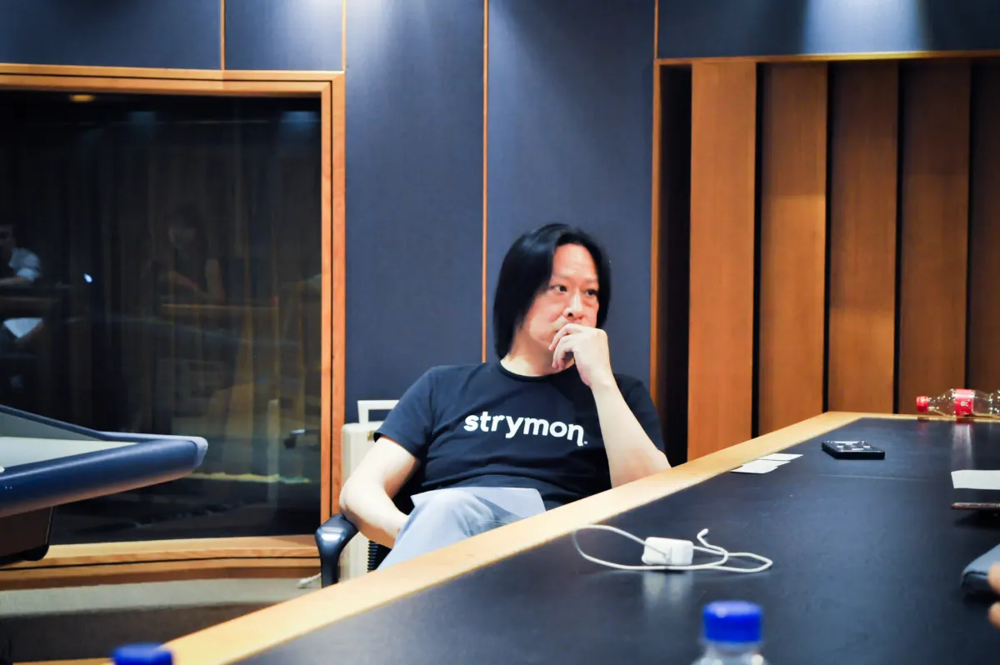

上一篇的專訪文章中，中岳老師提到了他對台灣流行音樂教育的看法以及期許。我們繼續將話題從教育拉到市場。很有趣的是，不論談到什麼主題，他依然會回到「思考」的核心價值，再以這樣的人生智慧繼續貢獻於台灣的流行音樂，將他的感受傳承給下一個世代。在專訪續集，中岳老師帶著我們回顧一些台灣的音樂歷史，分享了他對未來趨勢的看法。我們也問到他通常會如何挖掘和判斷一名樂手的淺力。更多讓你深思的「黃中岳哲學」，都在這篇專訪中。身為音樂人的你絕不能錯過！

Ｑ：老師對於台灣流行音樂未來的趨勢有什麼看法？
「如果我們去看台灣自己的流行音樂發展的軌跡，從民歌時期進入到滾石飛碟，進入到華研，在民歌時代政府不鼓勵年輕人去唱搖滾（歌曲有反叛的意味），他們想要讓青年的創作熱情放在民歌。事實上也寫出了很多非常好聽的歌，那樣的 database 涵養出一部分的消費市場。後面延伸出來的滾石和飛碟，從羅大佑、李宗盛所帶下來的創作人領先的概念，到飛碟的偶像包裝的商業概念。但是因為有先前民歌的市場涵養的基層，再透過好的商品去放大，所以我們的市場能量變得更大。
最輝煌的時期應該是90年代的市場。為什麼那時張惠妹或張學友可以在全世界賣到上百萬張唱片？因為前期被培養起來一個市場。流行音樂從唱片走到MP3，走到串流，到了現在市場完全走到了分眾的狀態。如果你問我我們可以用什麼策略創造未來的流行音樂市場？我認為沒有，我們現在所有想的市場的觀點，全都不是未來的市場。都是過去市場的回憶，我們不可能將過去的市場的回音投入在未來的市場。我們要去想的，是如何一起去挑戰這個全新的市場領域。」
Ｑ：我們可以透過哪些方式挑戰全新的市場？
「我們這些在音樂行業裡年紀比較大的，很可能在某些事情的衝勁和熱情，會低於年輕人，可是年輕人很多時候在技術含量的部分相較於老人可能會稍微低一點。我覺得理想的狀況是年輕人和老人如何一起去面對全新的，分割型的市場。未來的市場是一個全新的，大家都不知道的。可是這不是很好玩嗎？因為大家都不知道，有很多事情可以去嘗試。我們必須把自己以前對於市場的認知好好地保存起來，放在保險庫裡面，因為那已經發生完了。未來的事情全部都還沒發生。它將用什麼樣的脈絡和狀態去發生，我們都不知道。
我們可以有一個短期的預期，因為這一個預期會讓你產生探索的慾望。可是你不知道五年後它到底會到什麼地方去。我們只能確認一件事：無論在過去的這二十年，或甚至回推到更早古典音樂剛始的時候，真的是會被留下來的音樂只有一個共同點，一直貫穿不會消滅的，就是音樂的感動力，不論是什麼曲風。你總是要有那個感動力讓人們覺得你講的事情說到我的心。對我們來說最好的商業價值就是感動到我願意掏錢去消費你的產品。這個產品可能是電動玩具、電影，儘管現在IMAX貴但是你還是會想去看，因為你有這個慾望。音樂這個事情也是，讓大家覺得我很想掏這個錢去買下你的產品。這個是我們年輕的新血以及一些有經驗的老人應該要想辦法協同合作共同去挑戰的事情。」
Ｑ：剛剛談到年輕人和前輩的合作，請問老師認為可以如何建構不同世代的音樂人之間的橋樑？
「台灣的流行音樂其實沒有什麼真正的傳下來。有那種所謂的師徒制，可是都是屬於一代型的。很少可以聽到，從這個人，可以回朔到另一個人，再回朔到哪一個人。台灣幾乎沒有。可能在民歌時期以前都還有。因為現在的資訊太多的，反而讓你忽略掉，其實這些脈絡的建立是有它的必要性的。
因此，我大概在十年前，開始想建立一個新的台灣的音樂資訊的傳承的一個模型和模式。那時候我快要40歲。我覺得我，第一件要做的事情就是我千萬不要跟年輕人為敵。你看到年輕人有音樂才華的時候，不要先有自我保護的意識，怕他們搶我的飯吃。而是太好了，他已經會做這個了，他還不會做什麼？如果我把我會的東西告訴他，他是不是會做得比我更遠更長？最重要的是我一定要站在旁邊，像是朋友，才能夠一起完成了一件事情。然後當我們在做這個過程的時候，我從第一天就會告訴年輕人，現在你在做的事情，你要答應我，二十年後你有能力的時候你要做一模一樣的事情，才會形成一種系統傳承的概念。兩百年後可以回推到兩百年前音樂的family tree，看到早期是哪些人發起了這樣的事情。
就我所知，現在大概有三四個音樂工作系統或資深的老師們都在試著用完全相同的視野與見解，去看待和新的年輕音樂人之間的互動。隨著市場面向更不同的變化，未來這種協同作戰的狀態一定會更多。比較有經驗的老人如何無私地釋放自已的經驗給這個 project 裡面比較需要的人。那麼年輕人如何釋放他們那種無限的衝勁跟沒有邊界的想像力，去擴展那一個 project 有趣的面向。我們當然希望我們的產品很有趣，而很有趣的點通常是年輕人創造的。可是我們又希望這個東西是有深度，有厚度，而這可能是來自有經驗的工作者。所以這種協同合作，是我覺得我對台灣流行音樂最大的期許，最希望發生的事情。這些事情，我在北藝大跟年輕音樂工作講的時候，我都很自豪地說這種事情在華人世界裡，只有台灣才會有。」
Ｑ：會擔心台灣流行音樂的現況或未來在國際市場的發展嗎？
「目前這兩年的狀況只是一個波動，但是從更長遠的所有的波動干擾一起看，它到底出現的那條 flow，會是什麼？沒人知道。對我來說，它就是一個狀態。而那個狀態是這個社會的人文價值的一種反映。它是有意義的，可以讓我們討論那個社會面向的意涵。但我們必須將觀測時間拉到夠長的時候，才能夠提出一個相對比較客觀的事實。我們90年代台灣流行音樂最蓬勃的時候，誰能夠想到21世紀台灣流行音樂變成這個樣子？但我們一點都不是在另個平行時空，而是在同一條時間軸上。當你把這整個時間軸拉長，你會看到有趣的事。你看一個波形，完全可以去解釋它是怎麼產生出來的。可是如果我用90年代的角度去解釋現在的狀況你怎麼樣都解不出來。所以我覺得觀測時間很重要，要有一些耐心。
我覺得我們的鄰近國家是我們強大的競爭者不見得是一個壞事。有些人預估台灣的音樂會被比過去，我覺得不可能。原因是因為到五年之後，已經沒有所謂的併吞這件事情。我們併吞的概念就是大市場吃小市場。可是當這個大市場本身就是分裂型的市場，我們也是分裂型的市場。我們其實只是不同的分子的結合而已，已經沒有所謂的併吞這件事。當然你可以從產值的面向討論，可是從這個角度切入那根本沒什麼好聊的。我們人口才兩千三百萬，我們可以講究合作，不是講究競爭，並找到其他地方不會發生的工作模式或是思考價值。
為什麼我說鼓勵年輕人跟老人應該要合作，其實就是看到現在自媒體的發展，覺得它一定會發展到一個極限，物極必反。亂象或能量發展到一個極限的時候只有兩種可能：一個是完全毀滅，另一個是也許它會產生一個新的不一樣的狀態，就是『和』。當然我們最終點是滅。可是我覺得我們人類還活不到那時候，所以在這之前我們一直是保持波動的狀態，我覺得我看到的是『和』這件事。和，會讓這些分歧達到一個大家可以共同律動的狀態。什麼時候會發生？沒有人知道。這不是最有趣的地方嗎？但是我確定一件事情，它不是自然發生的，它一定需要你去改變變因。否則的話他會按照原來的速率在進行。你為了要提升它的速率，你必須要施力於它變因的力量，我們給它那個變以及因的力道，而這正是我們現在在做的事情。」
Ｑ：可以聊聊老師在強力錄音室的回憶或故事嗎？
「其實十年前我帶那些年輕樂手進到強力的時候，我跟他們講的第一件事就是，你們每一次進到這個房間，都要知道，這個房間不是你說進來就可以進來的。在這裡面發生過多少台灣最棒的音樂人在這裡完成的作品。他們的能量都還在這個房間裡面。你進來這個房間是抱著嬉鬧的心情，就不要進來。所以我們在樓下那個羽房訓練年輕人的時候，你知道我的鞋帶為什麼都不綁？做得不好鞋子脫下來就直接丟（笑）。但是我們有創造一批還不錯的年輕人。
我們在十年前合作的新樂手們，他們的涵養都是在強力發生的。你要養成年輕的音樂團體其實是需要花錢的，但我又很希望他們能夠在最好的環境裡面受訓練。因為他們不太有機會走進這個環境裡面聆聽，所以我在當時就很希望我們能夠在一個真正標準的錄音室裡面完成一個完整的訓練。訓練包括他們在live展演的演場會的準備，和音樂唱片製作的準備。他們在這個環境裡面已經建立了一個聽覺的熟悉度。任何一個有經驗的音樂工作者都會告訴你，其實這些 monitor 沒有一個是百分之百標準的，但是你必須去找到一個你聽得懂的。所謂聽得懂就是你知道它的頻率分布的狀態，你才能夠判斷現在錄進去的聲音是不是在自己預期的 format 裡面。因為你必須要有錄得夠好的 source 才能夠提供給你的混音師做削減。那你會需要像這樣的環境去建立你聽覺上的判斷。」
Ｑ：老師培養出許多厲害的樂手，現在都活躍於演唱會表演或出道的樂團，請問老師通常如何判斷一名樂手是否為有淺力的培育人選？
「character 角色。那個角色所帶出來的整體的氛圍。我覺得音樂是人的表現。你是什麼樣子的人你就會表現出什麼樣的音樂。不論你在彈奏什麼，不要被在彈奏的過程或是音色這些單一元素給牽著走，必須要看整體的。例如你去美術館看到一幅畫的時候，你不可能第一秒鐘就到畫前面看那個 brush 是怎麼畫的。你是站在一個比較遠的地方，看整個構圖、架構、感受。這幅畫因為吸引你的注意，你才會開始走近，仔細看它用的手法是什麼，以及反推它的建構過程。我看到的是picture, character。當然技術含量對於我們職業工作者是一定要先過得了的門檻，才能去談所謂的character。是鑽石一定就是鑽石。因為他是鑽石，他一定會被看見，我只是很幸運地比別人更早看見他。這是我自己覺得有價值的部分。我很希望在未來的教育裡面繼續保持這樣 search 的角度，去感受到那個角色。當我看到的時候，我會希望他們更早被別人看見。」
Ｑ：功利主義與資本主義當道，追隨金錢收入或更高的社會地位變成許多人盲從的目標，或著會因為與他人比較而產生挫折感。不知道老師如何看待這樣的社會氛圍？
「對我來說我的每一天都是重新開始，所以你在講的這種挫折感，我們都在面對。正常人類最常反應的那種在意是來自於得失心，你才會產生比較、定位自己和別人的想法。可是那一條線到底怎麼訂出來的？是得失心。我有沒有這樣的狀況，我一定有。我只是一個人而已。可是因為我有意識到我有這一層得失心，我會試著轉一下，轉到讓我在意的事情變成是，『昨天我所在意的事情，今天有沒有做更多？』。我還是有那個得失心，我只是把競爭的對象從別人轉到自己。我昨天想做的那件事今天有沒有做更好一點？還是我今天更墮落了一點？你很認真在看你自己的反應，然後你心裡面會去督促自己。假設那真的是你非常渴望想做到的事情，你一定會督促自己要push自己再多一點。我還是必須說，我們是凡人。我們有人的極限跟缺點，但你可以把那些缺點當成你用力的參考基準點。也就是你先承認你有這些缺點，你再努力地去往上建構一些事情。而你在建構的每一步都很可能要一直不斷地跟你的缺點爭戰。這過程不就又回到哲學了嗎？不論是功利主義還是其他主義，因為我在對談的對象是我自己，而我有自己非常冷酷的一個面向。我為什麼可以讓學生很怕我？是因為我會用差不多那樣的角度去面對我自己。可是那當然是在某些特定的事情上，特別是我想做的事情，我一定是非常嚴酷的。」
編按：老師的意思是說不用拿自己的價值跟別人的價值做比較，只要專注在自我目標上，確定自己走在正確的方向即可。
Ｑ：老師非常重視「思考」的鍛鍊，最後想聽老師如何將「思考」運用在自己從事音樂工作的心路歷程？
「我們人性最常發生的是，你覺得這樣那樣不好，那樣比較好等，有先入為主的觀念。我也會，可是我在那樣說的同時，我的另外一根弦在告訴我我有自己想要去維持的一個標準。你在你真正答應自己要去努力的那件事情上面，你不要背離了你的準則。每天睡前用這樣的標準來檢視自己，早上起來的時候，鼓勵自己今天要走的好一點點。人一生中到底可以做多少事情？在這邊我有過這麼多的錄音經驗，有的時候很期待，有的時候很吐血，不知道自己在幹嘛，很多的質疑。但是現在50歲的我來看20歲的自己，儘管經歷過質疑和挫敗，現在回來看就覺得那個感受多麼的珍貴。這20年中間我真的編了一些，留下了一些我篤定台灣還沒有其他人可以做到的樣貌。雖然我每一天都有不同的波動，可是其實長遠來講，我心裡面期待我自己要完成的事情的那一根弦，它幫助我用不同的角度去解釋的時候，都可以得到不錯的觀測結果。人生就是這樣不是嗎？不要被表象給迷惑，而是可以從現象中間觀測到什麼樣的事。」
小編後記
中岳老師在說話的時候，字字分明，邏輯無比清晰。針對各個事情的看法，他總是能夠馬上敘述背後的脈絡，點出最關鍵的問題，並整理出一個自己的觀點。但講完他的論點或看法時，偶爾會再謙虛地補充一句「我的看法只是一個參考點」或「這只是我一點點主觀的看法」等結尾，彷彿是在提醒著我們，他說的不見得是客觀的事實，而是個人的主觀意見。這讓小編更加深刻體會中岳老師對於文字和思維的謹慎態度。他是一名有見解的哲學家，但也是一名非常開明，且願意傾聽的聆聽者、觀察者。他從來沒有停止學習過。而這些累積已久的智慧與情感，都反映在他敘述的文字裡，也反映在他的音樂裡。
關於流行音樂的傳承，中岳老師談的其實不單只是技術面的傳授，而是包括精神、心理、感受、思維等面向。每個世代的音樂市場都有不同的樣貌；市場的運作模式亦是迅速在改變，甚至不可預測，但唯有透過紮下穩定的基礎，並促使年輕人和資深音樂人之間的合作，才能漸漸形成一個全新且茁壯的音樂市場。
整理這篇專訪的同時一直反覆聽著《達爾文》和《旋木》，小編從以前就特別喜歡聽這兩首歌。而這次有幸與編曲者進行訪談，再次回來欣賞他的作品時，又有更深一層的解讀。雖然主要樂器聽起來只有一把木吉他的撥弦聲，但還是能帶出歌曲的濃厚情感。我想一定是融合了「感受」與「思考」的種種巧思，才能夠呈現屬於他獨一無二的詮釋方式。不知道看完黃中岳老師的專訪的你，是否和小編一樣獲得不少精神層次的養分？不管你在音樂的世界裡是從事什麼角色，勿忘初衷。不斷鼓勵自己，也同時校正自己。每天都是一個新的開始，每天都成為比前一天更好的人。
小編真心推薦喜歡彈吉他的朋友們關注「黃中岳談吉他」，由老師親自經營的臉書專頁，裡面談到很多面向，包括木吉他、電吉他、錄音、製作、器材等，相信對年輕吉他手們而言會是一個截然不同的音樂涵養過程！
｜再看一次上集｜